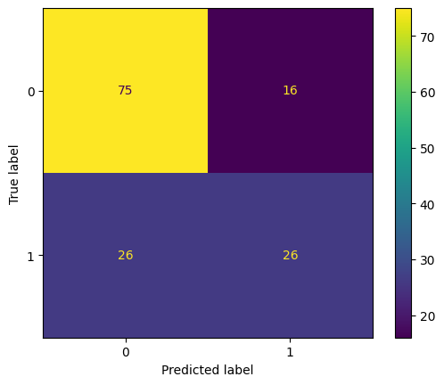
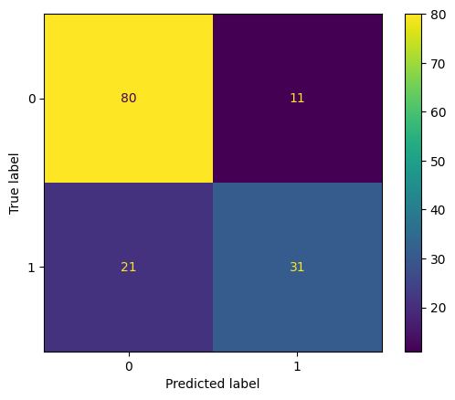

import seaborn as sns
import numpy as np
import matplotlib.pyplot as pltHW5: Part B - Applications
Load the “titanic” dataset in seaborn https://github.com/mwaskom/seaborn-data and set “survived” as the dependent variable.
You should prepare a tutorial for this part. Your tutorial should include the following:
- Loading the dataset and setting up the dependent variable
- Writing the code for each classification method
- Printing the output and interpreting the results
- Summarizing the findings and discussing the pros and cons of each method
(Loading dataset and other prep)
Loading the data (and some EDA)
df = sns.load_dataset('titanic')
df.head()| survived | pclass | sex | age | sibsp | parch | fare | embarked | class | who | adult_male | deck | embark_town | alive | alone | |
|---|---|---|---|---|---|---|---|---|---|---|---|---|---|---|---|
| 0 | 0 | 3 | male | 22.0 | 1 | 0 | 7.2500 | S | Third | man | True | NaN | Southampton | no | False |
| 1 | 1 | 1 | female | 38.0 | 1 | 0 | 71.2833 | C | First | woman | False | C | Cherbourg | yes | False |
| 2 | 1 | 3 | female | 26.0 | 0 | 0 | 7.9250 | S | Third | woman | False | NaN | Southampton | yes | True |
| 3 | 1 | 1 | female | 35.0 | 1 | 0 | 53.1000 | S | First | woman | False | C | Southampton | yes | False |
| 4 | 0 | 3 | male | 35.0 | 0 | 0 | 8.0500 | S | Third | man | True | NaN | Southampton | no | True |
df.info()<class 'pandas.core.frame.DataFrame'>
RangeIndex: 891 entries, 0 to 890
Data columns (total 15 columns):
# Column Non-Null Count Dtype
--- ------ -------------- -----
0 survived 891 non-null int64
1 pclass 891 non-null int64
2 sex 891 non-null object
3 age 714 non-null float64
4 sibsp 891 non-null int64
5 parch 891 non-null int64
6 fare 891 non-null float64
7 embarked 889 non-null object
8 class 891 non-null category
9 who 891 non-null object
10 adult_male 891 non-null bool
11 deck 203 non-null category
12 embark_town 889 non-null object
13 alive 891 non-null object
14 alone 891 non-null bool
dtypes: bool(2), category(2), float64(2), int64(4), object(5)
memory usage: 80.7+ KBCleaning the data (and other prep)
Looking at the column information (and dataset description by seaborn/kaggle) there is some redundant information, such as:
“sex” = “who”
“sibp”/“parch” and “alone” (“alone” can be derived based on the information in ‘sibp’ and ‘parch’)
“age”/“sex” and “adult_male” (the latter can be derived based on the other two)
“survived” = “alive” [This is important! Since we’re setting “survived” as the (only) dependent variable. So setting “alive” as an independent variable is going to affect our performance results.]
“embarked” = “embark_town”
“pclass” = “class”
Unfortunately, there aren’t any columns similar or equivalent to “deck,” but because there’s SO much data in that column missing (and supervised models can’t use missing values), I think I will still drop it in the end.
df = df[['survived','pclass','sex','age','sibsp','parch','fare','embarked']]
df.head()| survived | pclass | sex | age | sibsp | parch | fare | embarked | |
|---|---|---|---|---|---|---|---|---|
| 0 | 0 | 3 | male | 22.0 | 1 | 0 | 7.2500 | S |
| 1 | 1 | 1 | female | 38.0 | 1 | 0 | 71.2833 | C |
| 2 | 1 | 3 | female | 26.0 | 0 | 0 | 7.9250 | S |
| 3 | 1 | 1 | female | 35.0 | 1 | 0 | 53.1000 | S |
| 4 | 0 | 3 | male | 35.0 | 0 | 0 | 8.0500 | S |
df.info()<class 'pandas.core.frame.DataFrame'>
RangeIndex: 891 entries, 0 to 890
Data columns (total 8 columns):
# Column Non-Null Count Dtype
--- ------ -------------- -----
0 survived 891 non-null int64
1 pclass 891 non-null int64
2 sex 891 non-null object
3 age 714 non-null float64
4 sibsp 891 non-null int64
5 parch 891 non-null int64
6 fare 891 non-null float64
7 embarked 889 non-null object
dtypes: float64(2), int64(4), object(2)
memory usage: 55.8+ KBAnd models in sklearn/Python can only use numeric data, so I need to do something about the non-numeric (qualitative data written in text). Fortunately, sklearn provides an easy way to encode data. (So I can change qualitative data to 1, 2, 3, etc.)
df['embarked'].unique()array(['S', 'C', 'Q', nan], dtype=object)According to the dataset description on Kaggle, C = Cherbourg, Q = Queenstown, S = Southampton
from sklearn.preprocessing import LabelEncoder
for col in ['sex','embarked']:
encoder = LabelEncoder()
encoded_col = encoder.fit_transform(df[col])
df[col] = encoded_coldisplay(df.info())
df.head()<class 'pandas.core.frame.DataFrame'>
RangeIndex: 891 entries, 0 to 890
Data columns (total 8 columns):
# Column Non-Null Count Dtype
--- ------ -------------- -----
0 survived 891 non-null int64
1 pclass 891 non-null int64
2 sex 891 non-null int64
3 age 714 non-null float64
4 sibsp 891 non-null int64
5 parch 891 non-null int64
6 fare 891 non-null float64
7 embarked 891 non-null int64
dtypes: float64(2), int64(6)
memory usage: 55.8 KBNone| survived | pclass | sex | age | sibsp | parch | fare | embarked | |
|---|---|---|---|---|---|---|---|---|
| 0 | 0 | 3 | 1 | 22.0 | 1 | 0 | 7.2500 | 2 |
| 1 | 1 | 1 | 0 | 38.0 | 1 | 0 | 71.2833 | 0 |
| 2 | 1 | 3 | 0 | 26.0 | 0 | 0 | 7.9250 | 2 |
| 3 | 1 | 1 | 0 | 35.0 | 1 | 0 | 53.1000 | 2 |
| 4 | 0 | 3 | 1 | 35.0 | 0 | 0 | 8.0500 | 2 |
(so if you compare the newly encoded df with the original we see the “female” = 0 and “male” = 1 in the “sex” column. And then for the “embark” column: “C” (Cherbourg) = 0, “S” (Southampton) = 2, and so “Q” (Queenstown) = 1.
And lastly, as mentioned earlier, supervised models cannot deal with missing data, so I have two options fill (some of) the missing data with a potentially reasonable substitute (mean value, etc.) or drop the missing rows entirely.
# option 1: fill missing # option 2: drop all missing rows
df2 = df.dropna()
display(df2.info())
df2.describe()<class 'pandas.core.frame.DataFrame'>
Int64Index: 714 entries, 0 to 890
Data columns (total 8 columns):
# Column Non-Null Count Dtype
--- ------ -------------- -----
0 survived 714 non-null int64
1 pclass 714 non-null int64
2 sex 714 non-null int64
3 age 714 non-null float64
4 sibsp 714 non-null int64
5 parch 714 non-null int64
6 fare 714 non-null float64
7 embarked 714 non-null int64
dtypes: float64(2), int64(6)
memory usage: 50.2 KBNone| survived | pclass | sex | age | sibsp | parch | fare | embarked | |
|---|---|---|---|---|---|---|---|---|
| count | 714.000000 | 714.000000 | 714.000000 | 714.000000 | 714.000000 | 714.000000 | 714.000000 | 714.000000 |
| mean | 0.406162 | 2.236695 | 0.634454 | 29.699118 | 0.512605 | 0.431373 | 34.694514 | 1.599440 |
| std | 0.491460 | 0.838250 | 0.481921 | 14.526497 | 0.929783 | 0.853289 | 52.918930 | 0.781483 |
| min | 0.000000 | 1.000000 | 0.000000 | 0.420000 | 0.000000 | 0.000000 | 0.000000 | 0.000000 |
| 25% | 0.000000 | 1.000000 | 0.000000 | 20.125000 | 0.000000 | 0.000000 | 8.050000 | 2.000000 |
| 50% | 0.000000 | 2.000000 | 1.000000 | 28.000000 | 0.000000 | 0.000000 | 15.741700 | 2.000000 |
| 75% | 1.000000 | 3.000000 | 1.000000 | 38.000000 | 1.000000 | 1.000000 | 33.375000 | 2.000000 |
| max | 1.000000 | 3.000000 | 1.000000 | 80.000000 | 5.000000 | 6.000000 | 512.329200 | 3.000000 |
Selecting X & y (independent & dependent variables)
So based on that information, I will select the independent variables as follows (and we’re told what to use for the dependent variable)
X_col = ['pclass','sex','age','sibsp','parch','fare','embarked'] # independent variable
y_col = ['survived'] # dependent variableX = df2[X_col]
y = df2[y_col]Creating training and testing sets
from sklearn.model_selection import train_test_split
X_train,X_test,y_train,y_test = train_test_split(X,y,test_size=0.2) # 80-20 train-test splitX_train.shape(571, 7)X_test.shape(143, 7)Question 1
Conduct a Decision Tree analysis using scikit-learn library.
from sklearn.tree import DecisionTreeClassifier
#instatiate the model
dt_classifier = DecisionTreeClassifier()
# "Train" (fit) the model
dt_classifier.fit(X_train,y_train)DecisionTreeClassifier()In a Jupyter environment, please rerun this cell to show the HTML representation or trust the notebook.
On GitHub, the HTML representation is unable to render, please try loading this page with nbviewer.org.
DecisionTreeClassifier()
# Make prediction for testing
dt_pred = dt_classifier.predict(X_test)# Evaluate performance
from sklearn.metrics import classification_report, confusion_matrix, ConfusionMatrixDisplay
print(classification_report(y_test, dt_pred))
cm_disp = ConfusionMatrixDisplay(confusion_matrix = confusion_matrix(y_test, dt_pred),
display_labels = dt_classifier.classes_)
cm_disp.plot() precision recall f1-score support
0 0.78 0.86 0.82 91
1 0.70 0.58 0.63 52
accuracy 0.76 143
macro avg 0.74 0.72 0.72 143
weighted avg 0.75 0.76 0.75 143
<sklearn.metrics._plot.confusion_matrix.ConfusionMatrixDisplay at 0x7fa2c45ccf10>(According to the dataset description: 0 = Not Survived, 1 = Survived. (Not critical information right now, but potentially helpful))
Question 2
Conduct a Logistic Regression analysis using scikit-learn library.
# some functions to quicken the repetitive process
def fit_model(model):
classifier = model
classifier.fit(X_train,y_train)
return classifier
def test_pred(fitted_model): # I keep getting an error, whenever I tried to use this one,
return fitted_model.predict(X_test) # so I ended up not using it in the end (but tbh I'm not really sure why it wasn't working)
def eval_performance(pred_df,fitted_model):
print('Performance of {}:'.format(fitted_model))
print(classification_report(y_test, pred_df))
cm_disp = ConfusionMatrixDisplay(confusion_matrix = confusion_matrix(y_test, pred_df),
display_labels = fitted_model.classes_)
cm_disp.plot()
plt.show()from sklearn.linear_model import LogisticRegression
# instatiate and train
logreg_classifier = LogisticRegression()
logreg_classifier.fit(X_train,y_train)
# Make prediction for testing
logreg_pred = logreg_classifier.predict(X_test) #test_pred(logreg_classifier)
# Evaluate performance
eval_performance(logreg_pred,logreg_classifier)/shared-libs/python3.9/py/lib/python3.9/site-packages/sklearn/utils/validation.py:1111: DataConversionWarning: A column-vector y was passed when a 1d array was expected. Please change the shape of y to (n_samples, ), for example using ravel().
y = column_or_1d(y, warn=True)
/shared-libs/python3.9/py/lib/python3.9/site-packages/sklearn/linear_model/_logistic.py:444: ConvergenceWarning: lbfgs failed to converge (status=1):
STOP: TOTAL NO. of ITERATIONS REACHED LIMIT.
Increase the number of iterations (max_iter) or scale the data as shown in:
https://scikit-learn.org/stable/modules/preprocessing.html
Please also refer to the documentation for alternative solver options:
https://scikit-learn.org/stable/modules/linear_model.html#logistic-regression
n_iter_i = _check_optimize_result(
Performance of LogisticRegression():
precision recall f1-score support
0 0.81 0.87 0.84 91
1 0.73 0.63 0.68 52
accuracy 0.78 143
macro avg 0.77 0.75 0.76 143
weighted avg 0.78 0.78 0.78 143
Question 3
Conduct a KNN analysis using scikit-learn library.
from sklearn.neighbors import KNeighborsClassifier
knn_classifier = fit_model(KNeighborsClassifier(n_neighbors=15))
# Make prediction for testing
knn_pred = knn_classifier.predict(X_test)
# Evaluate performance
eval_performance(knn_pred,knn_classifier)/shared-libs/python3.9/py/lib/python3.9/site-packages/sklearn/neighbors/_classification.py:207: DataConversionWarning: A column-vector y was passed when a 1d array was expected. Please change the shape of y to (n_samples,), for example using ravel().
return self._fit(X, y)
Performance of KNeighborsClassifier(n_neighbors=15):
precision recall f1-score support
0 0.74 0.82 0.78 91
1 0.62 0.50 0.55 52
accuracy 0.71 143
macro avg 0.68 0.66 0.67 143
weighted avg 0.70 0.71 0.70 143

Question 4
Conduct an SVM analysis using scikit-learn library.
from sklearn import svm
# instantiate and train
svm_classifier = fit_model(svm.SVC(kernel='linear'))
# Make prediction for testing
svm_pred = svm_classifier.predict(X_test) #test_pred(svm_classifier)
# Evaluate performance
eval_performance(svm_pred,svm_classifier)/shared-libs/python3.9/py/lib/python3.9/site-packages/sklearn/utils/validation.py:1111: DataConversionWarning: A column-vector y was passed when a 1d array was expected. Please change the shape of y to (n_samples, ), for example using ravel().
y = column_or_1d(y, warn=True)
Performance of SVC(kernel='linear'):
precision recall f1-score support
0 0.79 0.88 0.83 91
1 0.74 0.60 0.66 52
accuracy 0.78 143
macro avg 0.77 0.74 0.75 143
weighted avg 0.77 0.78 0.77 143

Question 5
Summarize your findings. Explain the results of each method, compare their performance, and discuss the pros and cons of each method.
There was no model that had DRASTICALLY different performance results. All did relatively similarly (although I didn’t extensively try different values of k for KNN, so there was a possibility to see some more variety for that model had I taken more time to mess around with it). But for the most part, all the models seemed to do best in correctly predicting those who did not survive. (It also generally predicted that “not-survived” (0) more than “survived”(1) which can also tell us about the data if we didn’t really know about the data already (i.e. potential imbalance in the data)).
Pros and Cons:
…
Question 6 (optional)
Conduct other classification methods for “survived” using scikit-learn library or other relevant libraries.
Question 7 (optional)
Play with other dependent variables and see how different variables affect the prediction performance.
Question 8 (optional)
Use the “penguins” dataset in seaborn to predict species and compare the performance of different classification methods.